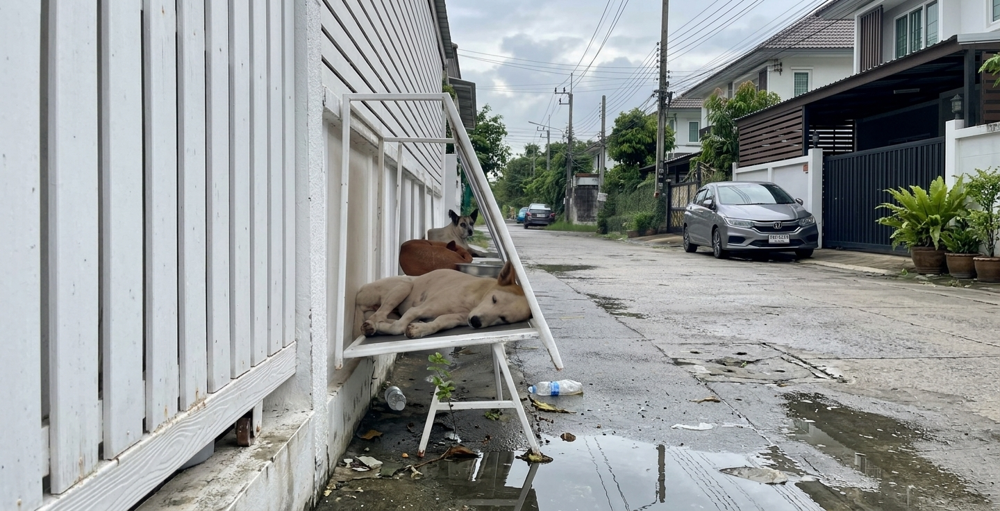

En Chile, se estima que 4.049.277 perros y gatos deambulan por la vía pública sin supervisión, según un estudio realizado por la Pontificia Universidad Católica de Chile para la Subsecretaría de Desarrollo Regional y Administrativo (Subdere, 2022). Esta cifra evidencia la magnitud de la presencia de animales sin supervisión en espacios públicos y la importancia de estudiar las condiciones ambientales a las que se encuentran expuestos.
En este contexto, los microbasurales constituyen focos críticos de insalubridad que exponen directamente a estos animales a residuos peligrosos, enfermedades e intoxicaciones, deteriorando gravemente su salud y bienestar.
Frente a esta realidad, nuestro proyecto busca empoderar a la comunidad mediante la ciencia ciudadana.
Con un enfoque inicial en La Cisterna, creamos herramientas accesibles para reportar, documentar y analizar el cruce entre los microbasurales y la presencia de animales, construyendo una base sólida para diseñar intervenciones efectivas.
Comparativa estimada de animales en situación de calle (en millones) según la región.
El proyecto se centra en una plataforma web interactiva que sirve como canal de ciencia ciudadana; a través de ella, la ciudadanía reporta y geolocaliza los microbasurales junto con imágenes de los perros y gatos vistos en el sector que se encuentren en peligro y en mal estado de salud. De esta manera se mantendrá un registro constante sobre las zonas donde se encuentran perros o gatos callejeros siendo directamente afectados por los microbasurales, y gracias a la participación directa de la comunidad se podrán detectar las soluciones más eficientes para ayudar a perros y gatos callejeros a un largo plazo, permitiendo a la comunidad estudiar un problema que los rodea constantemente.
Una vez recopilados los datos, se realizará una coordinación con la municipalidad de la comuna para limpiar el microbasural, permitiendo además que un equipo técnico evalúe y atienda de urgencia el deteriorado estado de salud de los animales rescatados, manteniendo un registro sobre qué factores afectan en mayor medida a estos.
Finalmente, el proyecto cierra el ciclo de recuperación mediante la rehabilitación y la búsqueda de hogares definitivos. Los animales rescatados son trasladados a un espacio seguro donde se reduce al mínimo el riesgo de nuevas infecciones o lesiones, y sus perfiles son publicados en un apartado de adopción responsable dentro de la misma página web. De este modo, la iniciativa no solo recopila valiosos datos científicos sobre el impacto ambiental en la fauna, sino que también ofrece una solución real, visible, humana y comunitaria para la comuna.